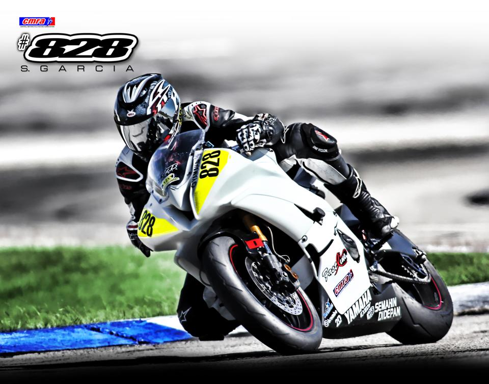

About Me
 My name is Steve Garcia. I don't like slow long walks on the beach. I like the sound of 25 racing motorcycles preparing for the start on the starting grid of a raceday and the smell motorcycle race fuel. I am a licensed motorcycle roadracer in a regional race league consisting of Texas, oklahoma and Louisiana. I am also the digital marketing director for a world level professional road racer. I have been in the racing community for over 6 years.
My two daughters are Buttercup and Kiddoe. Buttercup is my little comedian beagle and Kiddoe is my tortoiseshell cat that joined my team as a stray 5 years ago. Both care for me and give emotional support during unfortunate crashes during the race season. If I could train them to carry race gear while at race tracks that would be great. However I have been unsuccessful in the task. They are both beneficiaries in multiple life insurance policys. My parents aren't happy about this but they get a cut too if I clock out early.